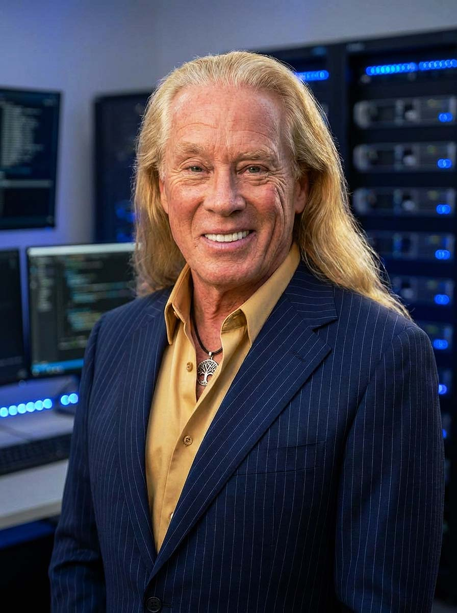

Founder Principle & Core Commitment
My principle is simple: I build scalable systems with uncompromising integrity. I am committed to protecting the vulnerable, operating transparently, and delivering measurable, defensible outcomes through NovaVault.
Who I Am as a Founder

I am a builder–protector. I design infrastructure that shields people from harm while unlocking durable upside for all stakeholders, including investors, teams, and the communities we serve. My orientation is mission-first, data-informed, and execution-focused, with a strong bias toward long-term value over short-term optics.
Why I Am Building NovaVault
NovaVault exists to protect people from exploitation, opacity, and fragile systems. I have spent years observing and experiencing how coercive dynamics, predatory models, and hidden risks damage lives and institutions. That experience created a deep intolerance for systems that profit from harm and a determination to build something better at scale.
I have strong founder–problem fit and founder–market fit: I understand the patterns of harm, I see where existing systems fail, and I know how to turn those insights into repeatable, protective structures that can scale responsibly.
How I Lead and Execute
Truth and Transparency
I communicate clearly with my team, partners, and investors. I disclose risks, set realistic expectations, and treat transparency as a core governance feature, not a marketing slogan. I stay accountable to evidence-based, measurable results.
Ethical Strength Under Pressure
I do not compromise on exploitation, coercion, or predatory behavior—internally or externally. I refuse growth that depends on manipulation, hidden externalities, or manufactured dependency. I design incentives and policies so that doing the right thing is structurally easier than doing the wrong thing.
Disciplined Execution
I convert insight into execution through rigorous priorities, repeatable systems, and continuous improvement. I focus on the few metrics that matter, build operating systems that can be audited and refined, and understand that trust is earned through consistent delivery and learning, not just narrative.
Culture and Team
I recruit and collaborate with people who are both highly capable and deeply values-aligned. I codify our operating principles so the culture of integrity, protection, and disciplined execution scales with headcount and capital. NovaVault’s culture is designed to be durable, not personality-dependent.
My Non‑Negotiables
- I do not trade integrity for growth.
- I do not conceal truth to preserve optics or short-term momentum.
- I do not build systems that profit from manipulation, abuse, addiction, or engineered dependency.
These are moral lines and strategic guardrails. They exist to protect long-term brand equity, regulatory resilience, and compounding enterprise value for everyone involved with NovaVault.
My Commitment to Investors
My commitment is to build durable value—financially, operationally, and reputationally—by combining disciplined execution with uncompromising ethics and verifiable real-world impact. I treat capital as a tool, not an idol.
With NovaVault, I will use capital to scale systems that measurably reduce harm and increase resilience, build defensible infrastructure with clear unit economics and capital efficiency, and create an asset that can withstand scrutiny from regulators, communities, and future capital providers.
Operating Code
This is how I lead NovaVault and how I steward every dollar of capital:
See clearly. Speak truthfully. Protect consistently. Build ethically. Heal strategically.